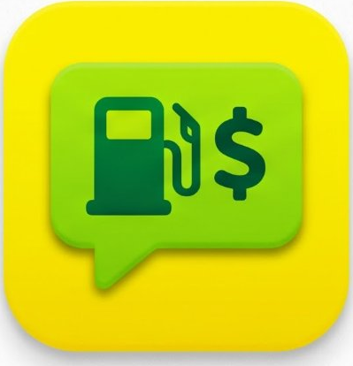

Cómo funciona Gasapp
Cómo funciona Gasapp
1. Precios oficiales, no inventados
Los precios salen del listado público de la Comisión Nacional de Energía (CNE): son los que cada permisionario está obligado a reportar. Gasapp toma una «foto» de ese listado y te la muestra tal cual, con su fecha.

2. Tu ubicación y la ruta real
Con el botón de GPS, la app calcula las distancias desde donde estás. En el mapa puedes trazar la ruta por calles hasta cualquier estación (servicio de rutas OSRM sobre datos de OpenStreetMap) o abrirla en Google Maps.

3. Ahorro calculado, no prometido
La calculadora compara la estación más barata contra la más cara de la zona con tus litros y tus cargas al mes, para que veas el ahorro real por carga y al mes.

4. La verdad de la comunidad
Cada estación se puede calificar en dos cosas que el precio no dice: la atención del personal y si te cargan litros completos. Las opiniones pasan por un filtro de groserías: con lenguaje ofensivo, no se publican.

5. Afluencia estimada por hora
Cada estación muestra una gráfica de afluencia por hora y un tiempo de fila aproximado para que elijas cuándo ir. Es una estimación de Gasapp a partir de los patrones típicos de la zona, no una medición en vivo.
 Datos y límites honestos
Datos y límites honestos
Fuente y fecha de los datos
Comisión Nacional de Energía (CNE), XML público de estaciones y precios reportados por los permisionarios (actualización diaria a las 18:00 h). La foto que muestra esta versión de Gasapp es del e incluye 26 estaciones alrededor de Tlatelolco, CDMX. Los precios cambian a diario: verifica siempre el precio en la bomba.

Lo que la fuente no trae
El listado oficial no publica el domicilio de cada estación, solo su nombre, permiso y coordenadas; por eso las rutas y el botón «Cómo llegar» trabajan con las coordenadas exactas. La afluencia y el tiempo de fila son estimaciones, no mediciones en vivo.
Comentarios: hoy en tu dispositivo, pronto para todos
El plan es guardar las opiniones en Cloudflare (un Worker con base de datos D1) para que las vea toda la comunidad, con el mismo filtro de groserías aplicado también en el servidor. Mientras esa conexión no está activa, Gasapp funciona en modo local: tus opiniones se guardan solo en este dispositivo y nadie más las ve.